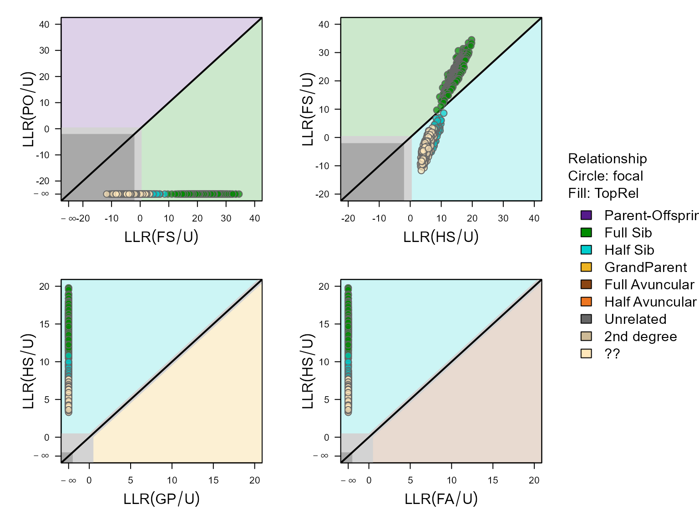
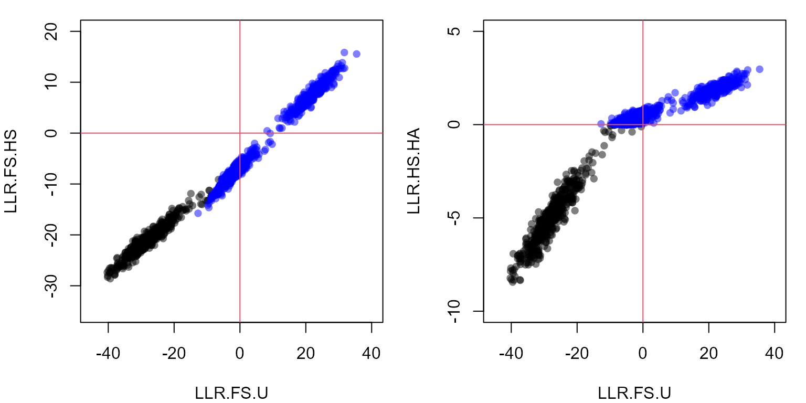
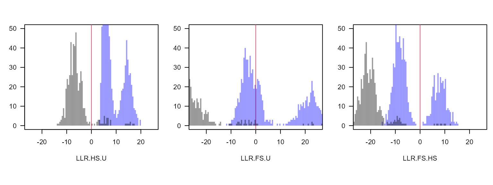
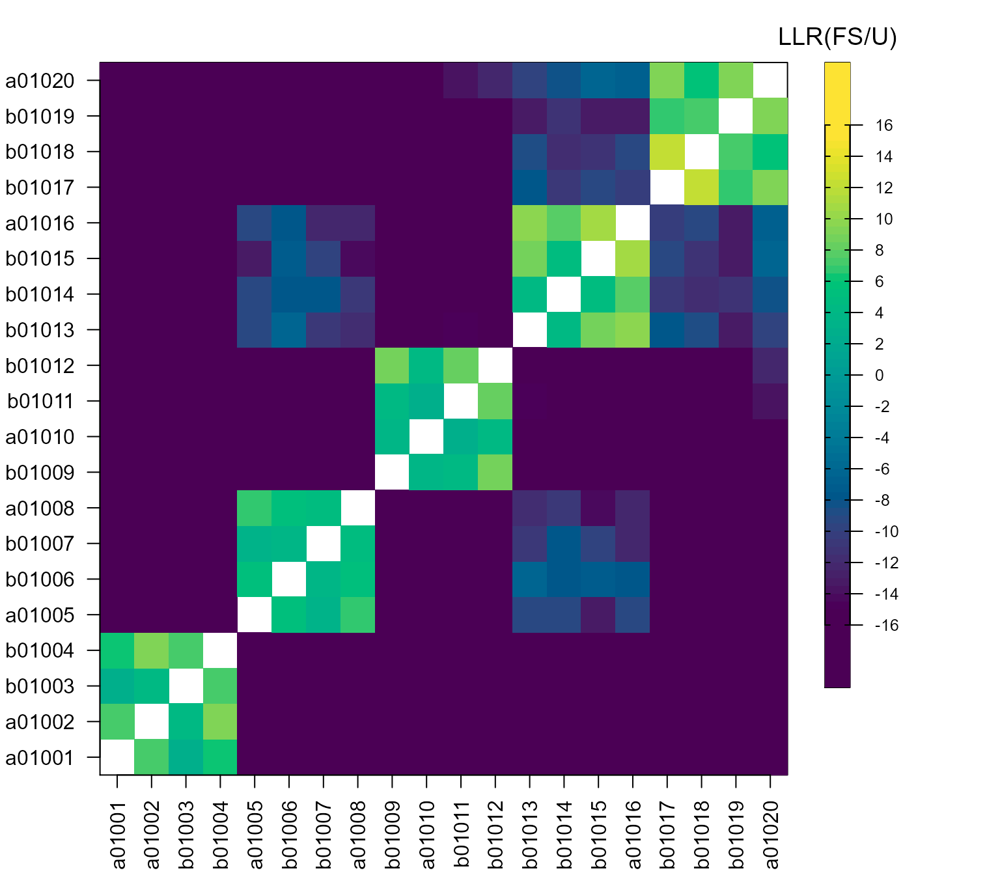
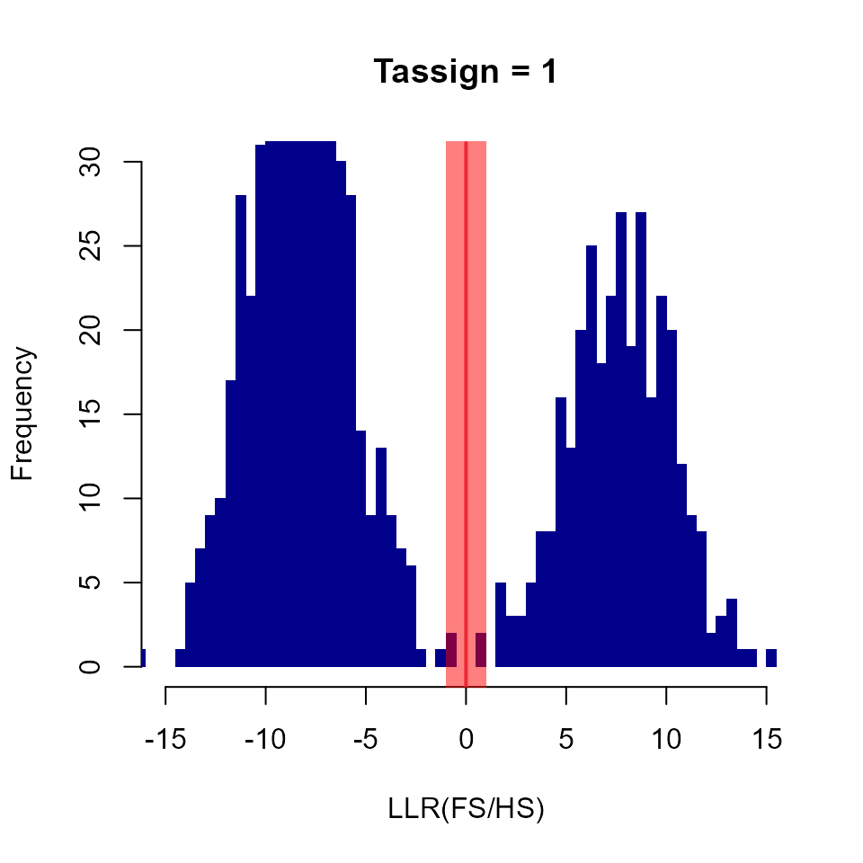

Classification of pairs using likelihoods
pairLL_classification.RmdIntroduction
Pedigree reconstruction with sequoia() sometimes suffers from high rates of non-assignment of true relatives (false negatives). This is often because it cannot tell whether a pair are maternal or paternal relatives, or it cannot tell what type of second degree relatives they are. More information on this can be found here in the user guide).
A fairly common situation is to have full sibling (FS), half sibling (HS), or unrelated (U) as the only three plausible relationships among the genotyped individuals, e.g. when nestlings are sampled but their parents are not. Typically none of the half sibling pairs will be assigned by sequoia(), as it cannot tell whether they are maternal or paternal half-siblings. When generations overlap, the possibility that they are full avuncular or grandparental also remains open genetically, even if this is biologically highly unlikely for clutch mates (for most species).
In such a situation, the likelihoods to be FS, HS, and U are the only three that are relevant, but there is no good way during pedigree reconstruction to set the prior for all other relationships to zero (including e.g. full cousins) and to abandon the distinction between maternal and paternal relatives (only implemented for hermaphrodites).
Likelihood ratios
The function CalcPairLL() lets you get ‘back to basics’ and returns the log10-likelihoods for various different relationships for each of the specified pairs of individuals. The log10-likelihood values in its output cannot be directly compared between pair: they differ because their genotypes differ. The likelihood ratios however are on a comparable scale between individuals, e.g. the ratio between how likely it is to be full siblings versus half sibling, or half sibling versus unrelated.
CAUTION
Comparisons between pairs should be done with caution: If pair A + B has a higher LLR(PO/U) than pair A + C, this does not necessarily make B a more likely parent of A than C. Both pairs may be parent-offspring (e.g. C parent of A, A parent of B), or B may actually be a full sibling (LLR(PO/U) > 0, but LLR(PO/FS) < 0).
Applicable to other relationships
Here the example of full siblings, half siblings and unrelated is used, but one could also have a situation where parent and full avuncular are the alternatives, or any other combination. Just keep in mind that all 3rd degree relationships are piled together under the ‘HA’ category, and that when Complx='full' all kinds of double relationships are considered too.
With or without pedigree
The likelihood ratio full sibling vs unrelated (LR(FS/U)) between two individuals can be calculated ignorant of the pedigree, or conditional on it. The latter increases power if individual A already has siblings, as the calculated LR is between B being a full (or half) sibling of A and all A’s siblings, versus being unrelated to A’s sibling cluster. This is similar as to what happens during sibship clustering, except that instead of gradually building up sibship clusters, the sibling clusters are provided at initiation.
The caveat is that CalcPairLL() does not check whether the provided pedigree is a correct or even plausible pedigree. If some of the supposed siblings of A are in fact unrelated, the LR between B and A conditional on the incorrect pedigree becomes ambiguous and virtually useless. It is therefore prudent to check and if necessary trim a pedigree before conditioning on it (e.g. using CalcOHLLR(), or removing any inconsistencies between genetic and field pedigree).
Here the approach will first be illustrated without conditioning on a pedigree, and then conditional on a pedigree.
Example data
To illustrate we use a single birth year cohort from the Ped_HSg5 example pedigree in the package. This pedigree has discrete generations, and each generation 24 females mates with 2 males each, and 16 males with 3 females each; each mating produces exactly 4 offspring. All founders are born in 2000, the parents for the 2001 cohort considered here are thus all simulated as unrelated.
This could for example be an egg-laying species were females have two broods per year, and 4 eggs/hatchlings per brood are sampled for genotyping. If egg dumping does not occur [^a], half-siblings within the same brood will always be maternal half-siblings, and half-siblings across different broods laid at the same time will be paternal half-siblings. With egg dumping, the puzzle becomes a bit more complicated but not necessarily impossible to solve
data(Ped_HSg5, LH_HSg5, package = "sequoia")
for (i in c("id","dam","sire")) Ped_HSg5[,i] <- as.character(Ped_HSg5[,i])
# looking at 2001 'hatchlings' only.
Ped.2001 <- Ped_HSg5[Ped_HSg5$id %in% LH_HSg5$ID[LH_HSg5$BirthYear <= 2001], ]
# total 192 individuals, across 24 dams x 16 sires
# simulate genetic data:
Geno.2001 <- SimGeno(Pedigree = Ped.2001,
ParMis = 1.0, # all parents non-genotyped
nSnp = 400, SnpError = 0.005)Find pairs of likely relatives
To reduce computational time (and memory size of the output object), it is often a good idea to only calculate likelihoods for pairs that are somewhat likely to be related. In this moderately sized example with 192 genotyped individuals, there are \((192 \times 191)/2= 18336\) unique pairs. Even when every individual belongs to a sibship, most pairs of individuals are unrelated:
# matrix with type of relationship between each pair of individuals in a pedigree:
RelM <- GetRelM(Ped.2001)
# Note: GetRelM() adds entries for all parents, using PedPolish()
# removing those again...:
SampleIDs <- rownames(Geno.2001)
RelM <- RelM[match(SampleIDs, rownames(RelM)), match(SampleIDs, rownames(RelM))]
# each pair is included twice in the matrix: above & below the diagonal
table(RelM)/2## RelM
## FS HS S U
## 320 1088 96 16928thus, 33856 of these pairs are unrelated (U), or 92%.
Subsetting pairs can be done based on field data (e.g. only check within-nest, or among neighbouring nests), or based on the genetic data. For the latter, use GetMaybeRel(), optionally with a much more liberal threshold than you would normally use.
# make mock lifehistory data for this example:
# all individuals same birth year + specifying non-overlapping generations
# ensures that parent-offspring, aunt/uncle, etc. are not considered as
# relationship alternatives.
LHX <- data.frame(id = rownames(Geno.2001),
Sex = 3,
BirthYear = 1)
AP <- MakeAgePrior(Discrete=TRUE, Plot=FALSE)## Ageprior: Flat 0/1, discrete generations, MaxAgeParent = 1,1
MR <- GetMaybeRel(Geno.2001,
LifeHistData = LHX,
AgePrior = AP,
Module = "ped", # search for all kinds of relatives, not just parent-offspring
Complex = "simp", # don't consider double relationships etc
Err = 0.005,
Tassign = 0.1,
Tfilter = -5,
MaxPairs = 20 * nrow(Geno.2001))## Searching for non-assigned relative pairs ... (Module = ped)## Genotype matrix looks OK! There are 192 individuals and 400 SNPs.## Counting opposing homozygous loci between all individuals ...
## Checking for non-assigned relatives ...## Found 0 likely parent-offspring pairs, and 848 other non-assigned pairs of possible relatives
head(MR$MaybeRel)## ID1 ID2 TopRel LLR OH BirthYear1 BirthYear2 AgeDif Sex1 Sex2 SNPdBoth
## 1 b01149 a01150 FS 14.05 0 1 1 0 3 3 396
## 2 a01150 a01152 FS 13.53 0 1 1 0 3 3 397
## 3 a01071 b01072 FS 12.81 0 1 1 0 3 3 396
## 4 b01134 a01135 FS 12.70 0 1 1 0 3 3 392
## 5 b01037 b01040 FS 12.68 0 1 1 0 3 3 392
## 6 b01121 a01123 FS 12.59 0 1 1 0 3 3 390The output from GetMaybeRel only shows the most likely relationship (for these 6 it is full sibling (TopRel = FS), and how much more likely this is than the next-most-likely relationship (column LLR). It does not show what the next-most-likely relationship is, or how much more likely these pairs are to be full siblings versus unrelated. Some pairs may be about equally likely to be full siblings as half-siblings, resulting in a low LLR, but it does not show how much more likely both sibling categories are versus unrelated.
Calculate likelihoods
PairLL <- CalcPairLL(data.frame(MR$MaybeRel[, c("ID1", "ID2")],
focal = "U"), # see help file for details
Geno.2001,
LifeHistData = LHX,
AgePrior = AP,
Complex = "simp",
Err = 0.005)
The upper-right panel (LLR(FS/U) vs LLR(HS/U)) shows that there are a large number of pairs in this dataset that are clearly full siblings (above diagonal), and a number that are likely half-siblings (blue dots), but also a substantial number that seem to be some kind of second or third degree relative but it is unclear how they are exactly related (yellow dots).
The difference between the likely half-siblings and ‘unclear’ is not obvious in the above plot, but comes about via the likelihood ratio between half-siblings versus third degree relative (see further).
For contrast, let’s also calculate likelihoods for a random set of pairs:
Pairs.random <- data.frame(ID1 = sample(SampleIDs, size=500, replace=TRUE),
ID2 = sample(SampleIDs, size=500, replace=TRUE),
focal = "U")
# exclude if by chance ID1 == ID2
Pairs.random <- Pairs.random[Pairs.random$ID1 != Pairs.random$ID2, ]
Pairs.random.LL <- CalcPairLL(Pairs.random,
Geno.2001,
LifeHistData = LHX,
AgePrior = AP,
Complex = "simp",
Err = 0.005, Plot=FALSE)
# plot only one panel, change assignment threshold
PlotPairLL(Pairs.random.LL, combo = list(c("HS", "FS")), Tassign=1.0)
For these random pairs, there is (usually) a clear divide between full siblings (above diagonal), half-siblings (below diagonal & LLR(HS/U)\(>0\)), and unrelated (LLR(HS/U)\(<0\)).
Likelihood ratios
Remember that
\[
\log(A / B) = \log(A) - \log(B)
\] and that CalcPairLL() returns log10-likelihood values. Log-likelihood values are always negative, as likelihoods are always between 0 and 1; positive values in the output are various types of NA (see help file).
PList <- list(maybesibs = PairLL,
random = Pairs.random.LL)
for (x in c("maybesibs", "random")) {
PList[[x]]$LLR.FS.U <- with(PList[[x]], ifelse(FS < 0, FS - U, NA))
PList[[x]]$LLR.HS.U <- with(PList[[x]], ifelse(HS < 0, HS - U, NA))
PList[[x]]$LLR.FS.HS <- with(PList[[x]], ifelse(FS < 0 & HS < 0, FS - HS, NA))
PList[[x]]$LLR.HS.HA <- with(PList[[x]], ifelse(HS < 0 & HA < 0, HS - HA, NA))
}
par(mfcol=c(1,2), mai=c(.8,.8,.2,.2))
with(PList[["random"]], plot(LLR.FS.U, LLR.FS.HS, pch=16,
xlim = c(-45, 40), ylim=c(-35, 20),
col=adjustcolor("black", alpha.f=0.5))) # semi-transparant
with(PList[["maybesibs"]], points(LLR.FS.U, LLR.FS.HS, pch=16,
col=adjustcolor("blue", alpha.f=0.5)))
abline(h=0, v=0, col=2) # horizontal & vertical axis
with(PList[["random"]], plot(LLR.FS.U, LLR.HS.HA, pch=16,
xlim=c(-45,40), ylim=c(-10,5),
col=adjustcolor("black", alpha.f=0.5)))
with(PList[["maybesibs"]], points(LLR.FS.U, LLR.HS.HA, pch=16,
col=adjustcolor("blue", alpha.f=0.5)))
abline(h=0, v=0, col=2) # horizontal & vertical axis
These scatterplots are the similar to the ones before, but in the left panel LLR(FS/HS) is on the y-axis: those pairs more likely to be full sibling than half sibling have positive values, and the remaining pairs negative values; and analogous for LLR(HS/HA) in the right panel.
The panels show three distinct blobs: full sibling, half sibling, and unrelated pairs. There are (usually) however also a number of points in-between the blobs: pairs for which it is unclear how they are related. For the pairs in-between the full- and half-sib blob, it is clear that they are some kind of sibling, and definitely not unrelated; but the pedigree reconstruction with sequoia() has no way to convert this information and leaves such a pair unassigned.
Comparing the two panels also shows that while the different likelihood ratios are all strongly correlated, they do convey slightly different information: the separation between full siblings and half siblings is clearer with LLR(FS/HS) (left panel y-axis), while the separation between half siblings and not-siblings is clearer with LLR(HS/HA) (right panel y-axis).
The distributions of likelihood ratios can also be visualised as a set of histograms:
# to draw multiple histograms in the same plot: calculate first, plot later
HistL_FSU <- list()
for (x in c("maybesibs", "random")) {
HistL_FSU[[x]] <- list()
for (y in c("LLR.HS.U", "LLR.FS.U", "LLR.FS.HS")) {
HistL_FSU[[x]][[y]] <- hist(PList[[x]][, y],
breaks=seq(-60, 60, by=0.5),
plot=FALSE)
}
}
# pick some colours
COL <- c(maybesibs = adjustcolor("blue",alpha.f=0.4),
random = adjustcolor("black",alpha.f=0.4))
par(mfcol=c(1,3), mai=c(.9,.4,.4,.1))
for (y in c("LLR.HS.U", "LLR.FS.U", "LLR.FS.HS")) {
plot(1,1, type="n", main="", xlab=y, ylab="Count", las=1,
xlim = c(-25, 25), ylim=c(0,50))
abline(v=0, col=2)
for (x in c("maybesibs", "random")) {
plot(HistL_FSU[[x]][[y]], col=COL[x], border=NA, add=TRUE)
}
}
Again the distribution of LLR(FS/U) shows a fairly clear separation between full siblings (LLR(FS/U) > 10), half siblings (-15 < LLR(FS/U) < 10) and unrelated (LLR(FS/U) < -15), and is strongly correlated with LLR(FS/HS) (see scatterplot above). The main advantage of using LLR(FS/HS) to classify full vs half siblings is a practical one: the point of separation between the blobs (if there is one) will always be at 0. For LLR(HS/U), LLR(FS/U) and similar metrics the point of separation will vary between datasets with the number of SNPs, (assumed) genotyping error rate, allele frequencies, missingness, …, and a threshold would need to be estimated every time.
A heatmap may also be helpful to identify which pairs of relatives are likely to be full or half siblings. There are several ways to make a heatmap in R (none I find quite satisfactory), for example:
# using the first 20 individuals for this example
# make a dataframe with all pairwise combinations:
Pairs20 <- data.frame(ID1 = rep(SampleIDs[1:20], each=20),
ID2 = rep(SampleIDs[1:20], times=20))
Pairs20 <- Pairs20[Pairs20$ID1 != Pairs20$ID2, ]
Pairs20.LL <- CalcPairLL(Pairs20,
Geno.2001,
LifeHistData = LHX,
AgePrior = AP,
Complex = "simp",
Err = 0.005, Plot=FALSE)
Pairs20.LL$FS.HS <- with(Pairs20.LL, ifelse(FS < 0 & HS < 0, FS - HS, NA))
# turn dataframe into a matrix
FSHS.M <- plyr::daply(Pairs20.LL, c("ID1", "ID2"), function(df) df$FS.HS[1])
# put the individuals back into their original order:
FSHS.M <- FSHS.M[SampleIDs[1:20], SampleIDs[1:20]]
brks <- c(-30, seq(-15, 15, by=0.5), 30) # group everything < -15 or >15 together
cols <- grDevices::hcl.colors(n = length(brks)-1, palette = "viridis")
# image() is simple and flexible, but doesn't do a legend
image_legend <- function(x, legend, breaks, col, title = NULL) {
image(y=x, z=t(as.matrix(x)),
axes=FALSE, frame.plot=TRUE, breaks = breaks, col = col)
axis(side=4, at=legend, las=1, cex.axis=0.8)
axis(side=4, at=legend, labels=FALSE, tck=0.2)
axis(side=2, at=legend, labels=FALSE, tck=0.2)
mtext(title, side=3, line=0.5, cex=1.2)
}
layout(matrix(c(1,2), nrow=1), widths=c(.8, .2))
par(mai=c(.8,.8,.5,.1))
image(x=t(FSHS.M), breaks=brks, col = cols,
axes = FALSE, frame.plot=TRUE,
xlab = "", ylab = "", cex.lab=1.2)
axis(side=1, labels=rownames(FSHS.M), at=seq(0,1,along.with=rownames(FSHS.M)), las=2)
axis(side=2, labels=colnames(FSHS.M), at=seq(0,1,along.with=colnames(FSHS.M)), las=2)
par(mai=c(1.5,.2,.5,1.2))
image_legend(x = seq(-20, 19.5, .5) +.25, # range of values
legend = seq(-16, 16, 2), # positions of legend labels
breaks = brks, col = cols, title = "LLR(FS/U)")
Buffer zone
While the expectation is that LLR(FS/HS) is positive for all full sibling pairs and negative for all other pairs, this does not mean that in imperfect real-world data all pairs will comply with this expectation. The solution that sequoia() implements is to not make an assignment if the likelihood ratio ‘close’ to zero, with ‘close’ defined by the threshold Tassign.
This may not be ideal in all situations, and you could apply a different tactic when classifying individuals based on the CalcPairLL() output (see next section). For example, if you are sure based on other data that pairs are either full siblings or maternal half-siblings and never paternal half-siblings (e.g. they are litter mates), you could assign the maternal sibship but leave the paternity open (perhaps with a note). Or if you are interested in extra-pair paternity, you could be conservative and assign these as full siblings to the rest of the brood (see also the next section, and the section on conditioning on the pedigree).
Tassign <- 1.0
plot(HistL_FSU[["maybesibs"]][["LLR.FS.HS"]], col="darkblue", border=NA,
xlim = c(-15, 15), ylim = c(0, 30), main=paste("Tassign =", Tassign),
xlab="LLR(FS/HS)")
abline(v=0, lwd=2, col=2)
rect(xleft=-Tassign, xright=+Tassign, ybottom=-5, ytop=40,
col=adjustcolor("red", alpha.f=0.5), border=NA)
Classify
Classifying pairs of individuals at a given assignment threshold Tassign is straightforward:
Tassign <- 0.5
for (x in c("maybesibs", "random")) {
PList[[x]]$class <- with(PList[[x]],
ifelse(LLR.FS.HS > Tassign, "FS",
ifelse(LLR.HS.U > Tassign, "HS",
"U")))
}
lapply(PList, function(df) table(df$class))## $maybesibs
##
## FS HS
## 319 529
##
## $random
##
## FS HS U
## 17 27 454Classifying sibling clusters is less straightforward, as the pairwise classifications are not necessarily consistent. For example, in the figure individuals A and B are highly likely to be full siblings, and so are A and C (at \(T_{assign}=0.5\)), but B and C are more likely to be half-siblings.
Example LLR(FS/HS) for a putative full sibling trio
The problem arises because the likelihoods of the three pairs are calculated independently of each other. During pedigree reconstruction, the problem is resolved by first assigning A and B as full siblings (which is unambiguous), and then calculating the likelihoods for C to be a full sibling vs half sibling to both A and B: Conditional on A and B being full siblings, C being a full sibling to one but not the other is not a valid pedigree configuration.
Conditioning on a pedigree
In datasets like this example, with a mixture of full- and half-siblings and no genotyped parents, usually clustering of full siblings is performed OK via sequoia(), but none of the half-siblings are assigned because it cannot tell whether they are maternal or paternal half-siblings.
So, first run the sibship clustering. As we will condition on this pedigree in the subsequent steps, we are being extra cautious and increase the assignment threshold:
SeqOUT <- sequoia(Geno.2001, LifeHistData = LHX,
Err = 0.005, Tassign = 1.0,
Complex = "simp", Module="ped",
Plot=FALSE, quiet=TRUE)Relationship between individual & cluster
When you provide a pedigree to CalcPairLL(), all calculations will be conditional on this pedigree. This means it does not matter if you calculate the likelihoods A–C or B–C in the trio example; both will calculate the likelihoods of relationships between C and the A–B sibling duo.
To illustrate:
# true pedigree, 2 broods from 1 female:
Ped.2001[which(Ped.2001$dam == "a00014"), ]## id dam sire
## 41 a01001 a00014 b00011
## 42 a01002 a00014 b00011
## 43 b01003 a00014 b00011
## 44 b01004 a00014 b00011
## 225 a01185 a00014 b00008
## 226 a01186 a00014 b00008
## 227 b01187 a00014 b00008
## 228 b01188 a00014 b00008
Offspr_a14 <- Ped.2001[which(Ped.2001$dam == "a00014"), "id"]
# inferred pedigree:
SeqOUT$Pedigree[SeqOUT$Pedigree$id %in% Offspr_a14, ]## id dam sire LLRdam LLRsire LLRpair OHdam OHsire MEpair
## 1 a01001 F0033 M0033 8.43 8.43 11.58 NA NA NA
## 2 a01002 F0033 M0033 7.92 7.92 17.27 NA NA NA
## 3 b01003 F0033 M0033 7.62 7.62 10.37 NA NA NA
## 4 b01004 F0033 M0033 9.54 9.54 16.25 NA NA NA
## 185 a01185 F0017 M0017 7.00 7.00 7.78 NA NA NA
## 186 a01186 F0017 M0017 6.79 6.79 5.87 NA NA NA
## 187 b01187 F0017 M0017 8.85 8.85 18.26 NA NA NA
## 188 b01188 F0017 M0017 9.19 9.19 13.97 NA NA NATo reiterate: the maternal sibship is divided into two sets of full siblings because sequoia() has no way of telling whether they share the same mother or the same father. This distinction can only be made when some parents of known sex are genotyped and the sibships interconnect: e.g. if male ‘b00008’ also mated with another female, who in turn also mated with a genotyped male (see also section on low assignment rate in main vignette).
Let’s calculate the likelihoods between the four members of the first brood and the first member of the second brood. For a meaningful answer, we temporarily drop both parents of the second individual (dropPar2 = 'both'): if two individuals have two different sets of parents, they cannot be siblings conditional on those parents. Now we calculate the likelihood that ‘a01185’ is a full sibling of half sibling to all of the first brood; if we had chosen dropPar1='both' we would calculate the likelihood of each member of the first brood being FS, HS, .. to the second brood.
somePairs <- data.frame(ID1 = Offspr_a14[1:4],
ID2 = "a01185",
focal = "HS",
dropPar2 = "both") # drop parents of ID2
somePairs.LL <- CalcPairLL(somePairs, Geno.2001,
Pedigree = SeqOUT$Pedigree,
Complex="simp",
Err = 0.005, Plot=FALSE)
somePairs.LL## ID1 ID2 Sex1 Sex2 AgeDif focal patmat dropPar1 dropPar2 PO FS
## 1 a01001 a01185 3 3 NA HS 1 none both 777 -340.91
## 2 a01002 a01185 3 3 NA HS 1 none both 777 -336.07
## 3 b01003 a01185 3 3 NA HS 1 none both 777 -341.86
## 4 b01004 a01185 3 3 NA HS 1 none both 777 -333.11
## HS GP FA HA U TopRel LLR
## 1 -303.02 -303.02 -303.02 -302.00 -305.13 HA 1.02
## 2 -298.18 -298.18 -298.18 -297.16 -300.29 HA 1.02
## 3 -303.97 -303.97 -303.97 -302.96 -306.08 HA 1.02
## 4 -295.22 -295.22 -295.22 -294.20 -297.33 HA 1.02For each pair, the likelihoods to be half-siblings (HS), grand-parental (GP) or full avuncular (FA) will be identical – another common cause for non-assignment
Note again that values >0 in the output denote different kinds of NA, and are listed in the help file. For the ‘PO’ column, ‘777’ denotes ‘impossible’: the individuals in the first column already have a mother assigned in the pedigree that is conditioned upon, this parent is not temporarily dropped to do the calculations (dropPar = 'none'), and an individual can only have one mother. (the pair were also born in the same year and can therefore not be parent and offspring, but this information is not used: AgeDif=NA.)
Likelihood ratios
The likelihoods differ between the pairs (because they have different genotypes), but the likelihood ratios do not (except due to rounding):
somePairs.LL$LLR.FS.HS <- with(somePairs.LL, ifelse(FS < 0 & HS < 0, FS - HS, NA))
somePairs.LL$LLR.HS.U <- with(somePairs.LL, ifelse(HS < 0, HS - U, NA))
somePairs.LL$LLR.HS.HA <- with(somePairs.LL, ifelse(HS < 0 & HA < 0, HS - HA, NA))
somePairs.LL[, c("ID1", "ID2", "FS", "HS", "HA", "U", "LLR.FS.HS", "LLR.HS.U", "LLR.HS.HA")]## ID1 ID2 FS HS HA U LLR.FS.HS LLR.HS.U LLR.HS.HA
## 1 a01001 a01185 -340.91 -303.02 -302.00 -305.13 -37.89 2.11 -1.02
## 2 a01002 a01185 -336.07 -298.18 -297.16 -300.29 -37.89 2.11 -1.02
## 3 b01003 a01185 -341.86 -303.97 -302.96 -306.08 -37.89 2.11 -1.01
## 4 b01004 a01185 -333.11 -295.22 -294.20 -297.33 -37.89 2.11 -1.02Compare these to the ratios when not conditioning on a pedigree:
somePairs.LL.noped <- CalcPairLL(somePairs, Geno.2001,
Complex="simp",
Err = 0.005, Plot=FALSE)
somePairs.LL.noped$LLR.FS.HS <- with(somePairs.LL.noped, ifelse(FS < 0 & HS < 0, FS - HS, NA))
somePairs.LL.noped$LLR.HS.U <- with(somePairs.LL.noped, ifelse(HS < 0, HS - U, NA))
somePairs.LL.noped$LLR.HS.HA <- with(somePairs.LL.noped, ifelse(HS < 0 & HA < 0, HS - HA, NA))
somePairs.LL.noped[, c("ID1", "ID2", "FS", "HS", "HA", "U", "LLR.FS.HS", "LLR.HS.U", "LLR.HS.HA")]## ID1 ID2 FS HS HA U LLR.FS.HS LLR.HS.U LLR.HS.HA
## 1 a01001 a01185 999.00 -338.19 999.00 -337.18 NA -1.01 NA
## 2 a01002 a01185 -346.83 -335.85 -335.24 -337.58 -10.98 1.73 -0.61
## 3 b01003 a01185 -349.14 -334.12 -333.66 -335.53 -15.02 1.41 -0.46
## 4 b01004 a01185 -348.01 -334.24 -333.92 -335.87 -13.77 1.63 -0.32Half-sibling clusters
For a pair of maternal half-siblings A and B, a third individual C must be identically related to both, but only ‘at that side of the family’: If C is a maternal grandmother to A, it is unavoidably also the maternal grandmother of B. But if C is the paternal grandmother of A, it could be unrelated to B. This distinction can be made via the patmat column.
random pairs revisited
Calculating likelihoods for the same subset of pairs as before, now conditional on the inferred (partial) pedigree:
Pairs.random.LL.wPed <- CalcPairLL(Pairs = cbind(Pairs.random,
dropPar2 = "both"),
Geno.2001,
Pedigree = SeqOUT$Pedigree,
LifeHistData = LHX,
AgePrior = AP,
Complex = "simp",
Err = 0.005, Plot=FALSE)
Pairs.random.LL$LLR.FS.HS <- with(Pairs.random.LL,
ifelse(FS < 0 & HS < 0, FS - HS, NA))
Pairs.random.LL.wPed$LLR.FS.HS <- with(Pairs.random.LL.wPed,
ifelse(FS < 0 & HS < 0, FS - HS, NA))
par(mfcol=c(1,2), mai=c(.8,.8,.2,.2))
hist(Pairs.random.LL$LLR.FS.HS, breaks=50, main="No pedigree")
hist(Pairs.random.LL.wPed$LLR.FS.HS, breaks=50, main="With pedigree")Log10 likelihood ratios full sibling vs half sibling, calculated without pedigree (left) and conditional on a partial inferred pedigree (right). Note difference in scale on the x-axes.
Pros & cons
The main advantage of calculating likelihoods conditional on a pedigree is that the distinction between different relationships tends to become much clearer once you condition on at least one parent for either individual.
The main disadvantage is that if the pedigree you condition on is incorrect, there is no meaningful way to interpret the likelihoods.
Another disadvantage can be that computation is considerably slower (order of magnitudes), making it more important to filter pairs first using GetMaybeRel().